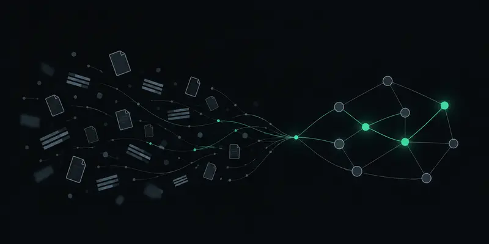
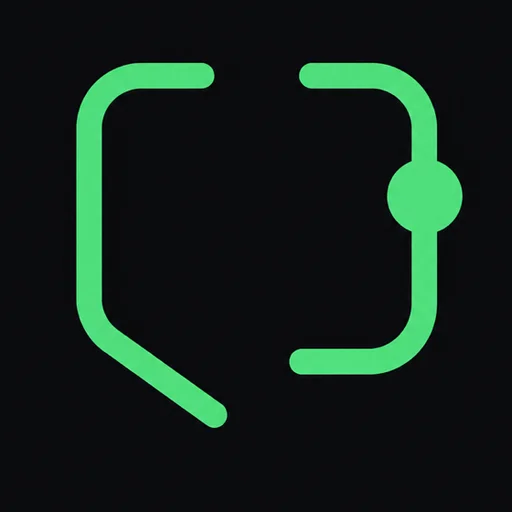
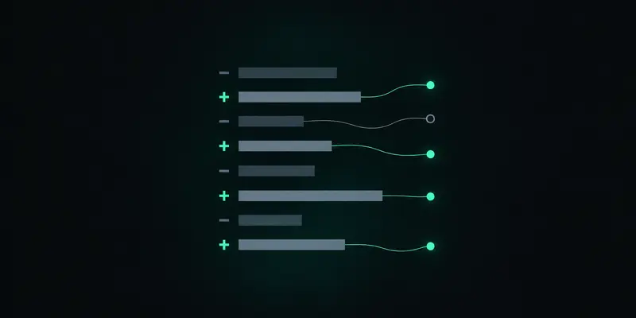

陌生概念 · 文章 · 系統
概念學習
沿一條實際流程追到負責的程式，建立用得上的理解，而不是目錄清單。

answer-me給 Claude Code、Codex 等 agent 的技能：把概念、repo 與 agent 的成果，變成附來源的解說。
npx skills@latest add CarlLee1983/AnswerMe --skill answer-me -g
github.com/CarlLee1983/AnswerMe

↑ 上面那句請求的實際產出，點開可讀完整頁。
示意對照 · 素材 ticket_api
同一份 README 與 service.py，兩種回答。
TicketService 會快取票券，60 秒後過期。
// 照抄 README，沒看程式
README 寫快取 60 秒後過期，但 service.py 的 cache 只是普通 dict，沒有任何過期邏輯來源（service.py 第 16、24 行）。兩者衝突推論，現有材料無法判斷哪個是預期行為缺口。
技能先判斷你卡在哪裡，再決定用文字、圖解或互動呈現。

陌生概念 · 文章 · 系統
沿一條實際流程追到負責的程式，建立用得上的理解，而不是目錄清單。

方案 · diff · 測試結果
說清前後行為與取捨，核對關鍵主張；agent 自稱成功不算證據。
每頁都由 answer-me v0.1.3 只憑原始素材產生，並經人工核對。
寫在前面，不寫在小字裡。
一行指令安裝，在 agent 裡說「使用 answer-me」。
npx skills@latest add CarlLee1983/AnswerMe --skill answer-me -g